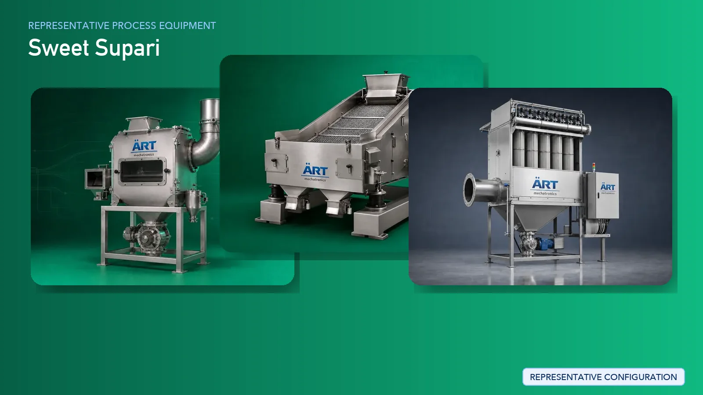

Sweet Supari (Flavored Betelnut) Processing Plant & Machinery
Sweet supari, also known as flavored betelnut, is a popular mouth freshener product widely consumed across global markets. The manufacturing process requires precision in cutting, roasting, coating, flavoring, and drying to achieve consistent taste, texture, and visual appeal.

About Sweet Supari processing
ART Mechatronics provides complete turnkey solutions for sweet supari processing plants, delivering automated and customized machinery systems designed for uniform coating, controlled flavor infusion, and high-quality output. Our solutions ensure consistent product quality, hygiene, and scalability for commercial production.
Complete Sweet Supari Process Flow
Raw supari is cleaned to remove dust, stones, and unwanted impurities before processing.
Ensures clean raw material for high-quality processing.
Clean betelnuts are cut into required sizes such as chips, granules, or small pieces depending on product type.
Uniform cutting is essential for consistent coating and flavor absorption.
Cut supari is graded to separate different sizes and remove fines.
Ensures uniform batch quality and improved processing efficiency.
The supari is roasted or dried to reduce moisture content and enhance crunchiness and shelf life.
Controlled temperature ensures consistent roasting without burning.
The roasted supari is cooled before flavor application to stabilize the product.
This is the most critical stage where sweeteners, flavors, colors, and perfumes are applied to the supari.
Ensures:
- Uniform coating
- Consistent taste
- Attractive appearance
The coated product is dried or conditioned to fix the coating and enhance shelf stability.
The final product is screened to ensure uniform size and quality.
Finished sweet supari is packed into pouches or containers using automated packaging machines.
Suitable for high-speed commercial production.
Machinery Required for Sweet Supari Plant
- Pre Cleaner
- Destoner
- Cyclone Separator
- Supari Cutting Machine
- Vibratory Grader
- Air Classifier
- Roaster / Dryer
- Cooling System
- Coating Drum
- Mixer / Blender
- Dryer (Post Coating)
- Vibro Sifter
- Packaging Machine
Turnkey Sweet Supari Plant Solutions
ART Mechatronics offers complete turnkey solutions for sweet supari manufacturing plants, including:
- Process design & plant layout
- Machinery manufacturing & integration
- Flavor coating system design
- Automation & control systems
- Installation & commissioning
- After-sales support
We customize solutions based on:
- Product type (sweet, flavored, premium variants)
- Production capacity
- Coating requirements
- Level of automation
Why Choose Art Mechatronics
- Specialized expertise in supari and mouth freshener industry
- Advanced coating and flavoring solutions
- Uniform mixing and coating technology
- High-efficiency, low-maintenance machinery
- Export-ready plant design
- Strong after-sales support
Machinery in a Sweet Supari plant
Where it's used
Get pricing & specs for the Sweet Supari plant
Share the product, target capacity, current process and plant location. These details help our engineers discuss the right machine or line configuration.
One partner, from design to start-up
ART Mechatronics designs, manufactures, installs and commissions your Sweet Supari solution with regional presence in India, UAE and Thailand.